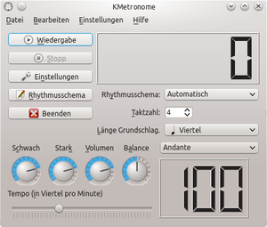
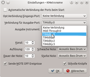
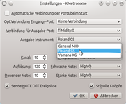
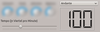
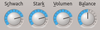
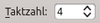
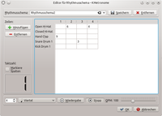
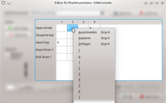
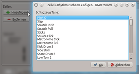

KMetronome
Dieser Artikel wurde für die folgenden Ubuntu-Versionen getestet:
Ubuntu 14.04 Trusty Tahr
Zum Verständnis dieses Artikels sind folgende Seiten hilfreich:
KMetronome  ist ein auf MIDI und ALSA basierendes Software-Metronom, das von Pedro Lopez-Cabanillas entwickelt und unter der GNU General Public License (GPL) herausgegeben wird. Das Programm wurde speziell für KDE konzipiert, kann aber auch unter anderen Desktop-Umgebungen verwendet werden (fehlende Abhängigkeiten werden automatisch nachinstalliert, sind aber relativ umfangreich).
ist ein auf MIDI und ALSA basierendes Software-Metronom, das von Pedro Lopez-Cabanillas entwickelt und unter der GNU General Public License (GPL) herausgegeben wird. Das Programm wurde speziell für KDE konzipiert, kann aber auch unter anderen Desktop-Umgebungen verwendet werden (fehlende Abhängigkeiten werden automatisch nachinstalliert, sind aber relativ umfangreich).
Da das Programm MIDI-basiert arbeitet, benötigt es einen nachgeschalteten externen oder einen Software-MIDI-Synthesizer. Weitere Merkmale von KMetronome sind:
eine hohe Rhythmus-Präzision
eine Schlagskala von 25 bis 250 (Grund-)Schlägen pro Minute
individuell hinzuschaltbare Zwischenschläge
die Verwendung benutzerdefinierter Rhythmus-Muster mit individuell hinzuschaltbaren Zwischenschlägen
individuell anpassbare Programmparameter und mehr
Installation¶
|  |
| KMetronome |
Folgendes Paket muss installiert [1] werden:
kmetronome (universe)
 mit apturl
mit apturl
Paketliste zum Kopieren:
sudo apt-get install kmetronome
sudo aptitude install kmetronome
Sofern kein externer (Hardware-)MIDI-Synthesizer Verwendung findet, muss ein Software-Synthesizer wie beispielsweise das Programm TiMidity hinzugezogen werden. Dieses Programm kann über folgendes Paket hinzugefügt werden:
timidity (universe)
mit apturl
Paketliste zum Kopieren:
sudo apt-get install timidity
sudo aptitude install timidity
Bei Desktopumgebungen, welche ein klassisches Menü bereitstellen, erscheint das Programm nach der Installation unter dem Unterpunkt "Multimedia" bzw. "Unterhaltungsmedien".
Einstellungen¶
Im Einstellungseditor, welcher über die Schaltfläche "Einstellungen" oder das Menü "Settings -> Configure KMetronome" zugänglich ist, müssen vor der ersten Verwendung Festlegungen zum zu verwendenden MIDI-Gerät vorgenommen werden, denn die Auswahlflächen sind in der Grundkonfiguration leer. Wird als nachgeschaltetes MIDI-Gerät TiMidity verwendet, ist im Ausklappfeld "Verbindung für Ausgabe-Port" das entsprechende Gerät (z.B. "TiMidity:0") auszuwählen, welches damit mit dem Programm verknüpft wird. Des Weiteren muss ein Ausgabe-Instrument (z.B. "Roland GS") ausgewählt werden.
|  |
| Ausgabe-Port festlegen |
|  |
| Ausgabe-Instrument festlegen |
Es empfiehlt sich, das Programm anzuweisen, sich diese Zuordnung für die spätere Verwendung zu merken. Hierzu ist die Option "Automatische Verbindung der Ports beim Start" zu aktivieren.
Benutzung¶
Über das nach Programmstart erscheinende Hauptfenster lassen sich nunmehr die wichtigsten Arbeitsparameter unkompliziert einstellen.
Grundfunktionen¶
 Mit dem ganz unten liegenden Schieberegler kann die Anzahl der Schläge pro Minute festgelegt werden. Das über der Digitalanzeige gelegene Ausklappfeld erlaubt über vordefinierte Tempobezeichnungen einen raschen Zugriff auf voreingestellte Tempostufen.
 Die runden Drehregler, die via  linker Maustaste nach oben oder nach unten gezogen werden können, dienen dazu, die Lautstärke der starken bzw. schwachen Zählzeiten im Takt festzulegen, die Gesamtlautstärke einzustellen ("Volumen") und die klangliche Ausgabebalance zwischen rechtem und linkem Lautsprecherkanal des Computers zu justieren.
linker Maustaste nach oben oder nach unten gezogen werden können, dienen dazu, die Lautstärke der starken bzw. schwachen Zählzeiten im Takt festzulegen, die Gesamtlautstärke einzustellen ("Volumen") und die klangliche Ausgabebalance zwischen rechtem und linkem Lautsprecherkanal des Computers zu justieren.
 Mittels des Feldes "Taktzahl" lässt sich die Anzahl der Zählzeiten pro Takt festlegen, d.h. ob z.B. ein 3/4-, 4/4- oder anderer Takt geschlagen werden soll.
Die Länge des Grundschlags bezogen auf die zugrundeliegende Schlaggeschwindigkeit, z.B. Viertelschläge, Halbe (entspricht Alla breve) und dergleichen, wird im Ausklappfeld "Länge Grundschlag" festgelegt.

Rhythmus-Schemata¶
Über die Schaltfläche "Rhythmusschema" lässt sich ein Fenster öffnen, mit welchem eine Feineinstellung der Schlag-Klänge vorgenommen werden kann. So lassen sich für jeden Schlag des Metronoms (horizontale nummerierte Tabellenzeile) verschiedene Schlagzeugklänge (vertikale Tabellenspalte) zuordnen. Weitere Tabellenspalten können über die kleinen Schaltflächen ganz unten links hinzugefügt werden. Wenn z.B. auch Achtel-Zwischenschläge gewünscht sind, ist der Zahlenwert für die Tabellenspalten auf "8" zu ändern und im daneben liegenden Ausklappfeld "Achtel" zu wählen.
Die Zuordnung von Instrumenten zu den einzelen Schlägen erfolgt dann über  rechten Mausklick auf das entsprechende Tabellenfeld. Die im aufklappenden Kontextmenü auswählbaren Zahlenwerte entsprechen den zur Verfügung stehenden Lautstärkewerten.
rechten Mausklick auf das entsprechende Tabellenfeld. Die im aufklappenden Kontextmenü auswählbaren Zahlenwerte entsprechen den zur Verfügung stehenden Lautstärkewerten.
Zu den bereits beispielhaft vom Programm vorgegebenen Klängen können über die Schaltfläche "Hinzufügen" weitere Instrumente hinzugefügt werden.
|  |
| Zuordnung von Instrumenten |
|  |
| Instrument hinzufügen |
Über die Schaltfläche "Wiedergabe" lässt sich das erstellte Rhythmus-Schemata testen. Durch das Aktivieren des Kontrollkästchens "Markiere Spalten" kann beim Abspielen eine optische Kontrolle über den Ablauf des erstellten Rhythmusschemas vorgenommen werden.
Zuletzt darf nicht vergessen werden, dem erstellten Rhythmusschema im oben liegenden Namensfeld einen aussagekräftigen Namen zuzuweisen und es dann mittels der "Speichern"-Schaltfläche abzuspeichern, da die Einstellungen beim Beenden ansonsten verloren gehen.
Im Hauptfenster steht das neue klangliche Rhythmusschema dann im gleichnamigen Ausklappmenü zur Auswahl zur Verfügung.
 Programmübersicht
Programmübersicht- Erstellt mit Inyoka
-
 2004 – 2017 ubuntuusers.de • Einige Rechte vorbehalten
2004 – 2017 ubuntuusers.de • Einige Rechte vorbehalten
Lizenz • Kontakt • Datenschutz • Impressum • Serverstatus -
Serverhousing gespendet von